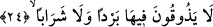
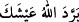
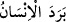

onlar oradan çıkacak değillerdir. Onlar için devamlı bir azab vardır.” (el-Mâide,
5/37) Çünkü bir tefsir kaidesine göre; açıkça söylenen ifâde âyetin mefhumundan
anlaşılan işârete tercih edilir ve âyetin mefhumundan çıkan işâret açıkça belirtilen ifâde
karşısında tutunamaz.
Ebû Hayyan’ın ifâdesine göre buradaki “müddet”, “bundan sonra yalnızca
azâbınızı arttıracağız” (en-Nebe’, 78/30) âyet-i kerîmesiyle neshedilmiştir. Bununla
ilgili başka açıklamalar ilerde gelecektir.
24. Orada bir serinlik ya da (susuzluk gideren) bir içecek tatmazlar.
Âyetteki “tatmazlar” kelimesi, “hissetmezler” anlamındadır. Yoksa tatmanın aslı, tadın
varlığı demektir. Ancak içilecek şey dikkate alınarak “tatmazlar” denmişse, o zaman bu
ifâde zâhir anlamıyla doğru olur. “Tatmak” her ne kadar örfte az olan şey için söz
konusu ise de aynı zamanda çok olan şey için de düşünülebilir. Zira bu fiilin çok olan
nesneler için de kullanımı söz konusudur.
Âyetteki “berd/serinlik” kelimesinden maksad, cehennemdekileri rahatlatan,
cehennemin ateşinin harâretini onlardan savuşturup gideren şey demektir. Yoksa onlar
cehennemde zemherir soğuğunu tadacaklardır. Bu açıklamalar ışığında âyet-i kerîmeye
mânâ vermek gerekirse; “onlar yararlanacakları ve kendine meyledecekleri herhangi bir
serinlik duymazlar” demek olur. “Berden” kelimesinin sonundaki tenvin “nev’iyet/
çeşitlilik” bildirir. Buna göre “bir çeşit serinlik duymazlar” demek olur.
Katâde’ye göre “berd” kelimesiyle kinâye yoluyla rahatlık kasdedilmektedir. Çünkü
Araplar sıcak ülkelerde yaşayan insanlar oldukları için insanın harâret anında
serinlikten duyduğu lezzete itibar ederek “/Allah geçimini tebrid etsin yâni
güzel kılsın” derler.
Râğıb’ın ifâdesine göre “berd” aslında “harâret”in zıttıdır. Mesela Araplar “berede
keza” derler ki anlamı “soğuk gibi sâbit oldu” demektir. Sâbit oluşun soğuk ile birlikte
oluşu hareketin sıcaklıkla birlikte oluşu gibidir. Arapçada “/insan soğudu”
derler ki bununla “o insan öldü” anlamını kasdederler. “Beredehu” ifâdesi “o onu
katletti” demektir. Araplar “berd” kökünden türeme olarak “es-suyûful-bevârid/
öldürücü kılıçla” derler. İnsanın ölmesinin “berd” kökünden bir kelime kullanılarak
ifâde edilmesi, ölmüş olan insanın ruhunun bedeninden ayrılması dolayısıyla vücûdunda
harâretin kalmamasından ve hareketli iken sâkin hale gelmiş olmasından dolayıdır.
Nitekim kelimenin kökündeki “soğukluk, serinlik, sükûnet” anlamından dolayı araplar
uyku için “berd” ifâdesini kullanmışlardır. Bunu kullanmalarının nedeni ya uyku
esnasında insanın cildinin soğumasından ve serinlemesinden ya da uyuduğunda sükûnete
ermesinden dolayıdır. Serinlik anlamına gelince bilindiği üzere uyku, uyuyan insanı